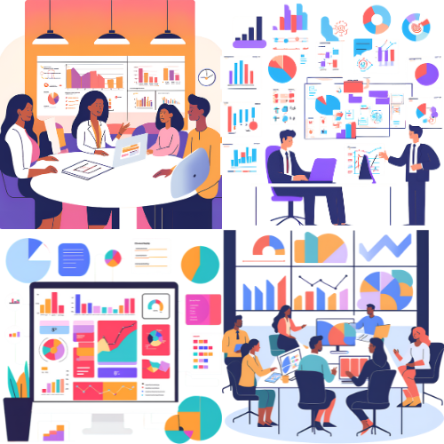

Características Principales de nuestro Software de Gestión Empresarial:
- Gestión de Recursos Humanos (RRHH): Administración de empleados, nóminas, asistencia, vacaciones y más.
- Gestión Financiera y Contabilidad: Control de ingresos, gastos, facturación, contabilidad general y reportes financieros.
- Gestión de la Relación con los Clientes (CRM): Seguimiento de clientes potenciales, gestión de contactos, historial de interacciones y automatización de ventas.
- Gestión de Inventario: Control de stock, seguimiento de productos, gestión de proveedores y alertas de inventario bajo.
- Gestión de Proyectos: Planificación, seguimiento de tareas, asignación de recursos y colaboración en proyectos.
- Generación de Informes y Analítica: Obtén insights valiosos sobre el rendimiento de tu negocio con informes personalizables y paneles de control intuitivos.
- Automatización de Flujos de Trabajo: Define y automatiza procesos repetitivos para aumentar la eficiencia y reducir errores.
- Seguridad y Acceso Basado en Roles: Protege la información de tu empresa y define permisos de acceso para diferentes usuarios.
- Integración con Otras Herramientas: Conecta nuestro software con otras aplicaciones que ya utilizas para un flujo de trabajo más fluido.
- Acceso en la Nube: Accede a tu información desde cualquier lugar y dispositivo con conexión a internet.
Beneficios Clave para tu Negocio:
- Aumento de la Eficiencia Operacional: Automatiza tareas y optimiza flujos de trabajo, liberando tiempo para actividades estratégicas.
- Mejor Toma de Decisiones: Accede a información precisa y en tiempo real para tomar decisiones informadas.
- Reducción de Costos: Optimiza la gestión de recursos y reduce errores, lo que se traduce en ahorros significativos.
- Mejora de la Comunicación y Colaboración: Facilita el flujo de información entre departamentos y equipos.
- Mayor Satisfacción del Cliente: Gestiona mejor las relaciones con tus clientes y ofrece un servicio más personalizado.
- Visión Integral del Negocio: Obtén una perspectiva completa del rendimiento de tu empresa en un solo lugar.
- Escalabilidad y Flexibilidad: Adapta el software a medida que tu negocio crece y evoluciona.
- Mayor Seguridad de la Información: Protege los datos críticos de tu empresa con medidas de seguridad robustas.
Módulos Incluidos en nuestro Software Integral:

Nuestro software de gestión empresarial está compuesto por módulos potentes e integrados:
- Módulo de RRHH: Gestión completa del personal.
- Módulo Financiero: Contabilidad, facturación y gestión de pagos.
- Módulo CRM: Gestión de clientes y ventas.
- Módulo de Inventario: Control de stock y almacén.
- Módulo de Proyectos: Planificación y seguimiento de proyectos.
- Módulo de Informes: Generación de reportes personalizados.
- Módulo de Automatización: Configuración de flujos de trabajo automáticos.
Cada módulo está diseñado para trabajar en conjunto, proporcionando una solución cohesiva y eficiente para la gestión de tu empresa.
¡Impulsa la Gestión de tu Empresa Hoy Mismo! Contáctanos:
¿Listo para transformar la manera en que gestionas tu negocio? ¡Nuestro equipo está preparado para mostrarte cómo!
Solicita una demostración personalizada o contáctanos para obtener más información.